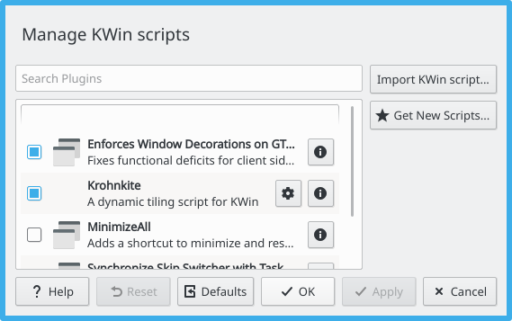

This is a fork of Krohnkite - a dynamic tiling extension for KWin.
Project goals are the following:
make install
make uninstall # to uninstall the script
It is reported that a manual step is required to enable user configuration of KWin scripts. This is a limitation of KWin scripting.
To enable configuration, you must perform the following in command-line:
mkdir -p ~/.local/share/kservices5/
ln -s ~/.local/share/kwin/scripts/bismuth/metadata.desktop ~/.local/share/kservices5/bismuth.desktop
A configuration button will appear in KWin Scripts in System Settings.

To make changes effective, the script must be reactivated:
KWin Scripts dialog, untick BismuthApplyApplyProceed to the TWEAKS section.
| Key | Action |
|---|---|
| Meta + J | Focus Down/Next |
| Meta + K | Focus Up/Previous |
| Meta + H | Left |
| Meta + L | Right |
| Meta + Shift + J | Move Down/Next |
| Meta + Shift + K | Move Up/Previous |
| Meta + Shift + H | Move Left |
| Meta + Shift + L | Move Right |
| Meta + I | Increase |
| Meta + D | Decrease |
| Meta + F | Toggle Floating |
| Meta + \ | Cycle Layout |
| Meta + Return | Set as Master |
| Meta + T | Use Tile Layout |
| Meta + M | Use Monocle Layout |
| unbound | Use Spread Layout |
| unbound | Use Stair Layout |
Generated using TypeDoc